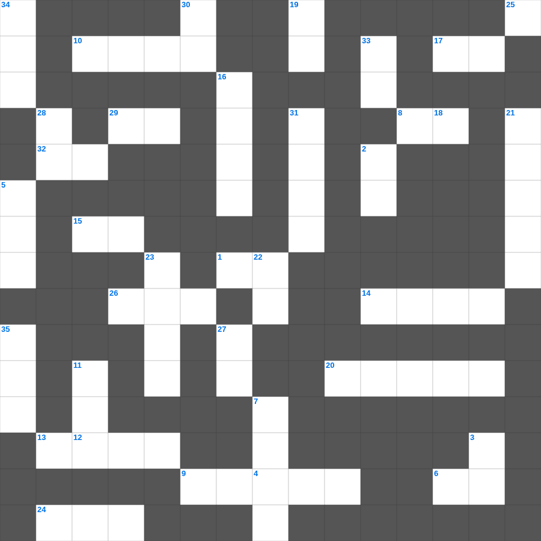

요엘 & 아모스 마스터 50
📌 서비스 정의
십자가로세로는 교회 주보와 주일학교에서 사용할 수 있는 성경 기반 가로세로 퍼즐 서비스입니다. 성경 인물, 사건, 핵심 구절을 바탕으로 제작되었습니다. 온라인 풀이 및 인쇄 기능을 제공합니다.
📖 요엘란?
요엘은 메뚜기 재앙을 배경으로 회개를 촉구하며, 성령이 부어지는 약속과 여호와의 날에 대한 예언을 전한 짧은 예언서입니다.
📚 요엘의 주요 사건·주제
메뚜기 재앙의 묘사 · 회개와 금식의 촉구 · 성령 강림 예언(요엘 2장) · 여호와의 날 예언 · 이스라엘의 회복 약속
오늘은 요엘의 주요 내용을 담은 요엘 말씀 퀴즈를 준비했습니다. 총 35개의 힌트가 있으며, 주일학교 교재나 성경공부 자료로 활용하기 좋습니다. 무료로 즐기는 요엘 가로세로 퍼즐을 지금 바로 풀어보세요!

📝 가로 힌트
1. 코는 다메섹을 향한 레바논 이것 같구나
4. 남유다의 왕권을 찬탈하고 손자들을 죽였던 여왕
6. 보라 그의 마음은 교만하며 그 속에서 정직하지 못하나 의인은 그의 이것으로 말미암아 살리라
8. 내가 나의 맹렬한 이것을 나타내지 아니하며 내가 다시는 에브라임을 멸하지 아니하리니
9. 빌립보의 자색 옷감 장사, 첫 개종자
10. 에스더의 사촌 오빠
12. 말라기 3장에서 여호와를 경외하는 자들을 위해 기록된 책
13. 하나님이 이스라엘을 택하신 이유 '모든 민족 중 가장 이것하기 때문이 아님'
14. 스가랴가 본 환상 중 날아가는 이것
15. 구약 성경의 가장 마지막 단어
17. 요나가 그 성읍에 들어가서 하루 동안 다니며 외쳐 이르되 사십 일이 지나면 니느웨가 이것되리라
20. 아하시야 왕이 이스라엘 왕 요람과 함께 싸우러 간 장소
24. 하나님이 약속하신 젖과 꿀이 흐르는 땅
26. 헤롯 왕 때에 유대 베들레헴에서 예수께서 나시매 동방으로부터 이들이 예루살렘에 이르러
29. 성막 입구의 방향
32. 시온을 향하여 이르기를 네 하나님이 이것 하신다 하는 자의 산을 넘는 발이 어찌 그리 아름다운가
📝 세로 힌트
2. 제9계명 '거짓 이것하지 말라'
3. 기쁜 소식, 즉 예수 그리스도의 이야기
5. 다윗과 우정을 나눈 사울의 아들
7. 성벽 공사에 참여한 제사장들의 대표
11. 아모스가 하나님의 심판을 선포하며 본 첫 번째 환상
16. 학개서의 주요 사명
18. 인애를 기뻐하시므로 이것을 무궁토록 품지 아니하시나이다
19. 너희가 자기를 위하여 공의를 심고 이것을 거두라
21. 노아의 방주를 만든 나무
22. 무엇이든지 남에게 대접을 받고자 하는 대로 너희도 남을 이것하라 이것이 율법이요 선지자니라
23. 성벽 공사 중 '양문'을 건축한 사람들
25. 가나안은 이것과 꿀이 흐르는 땅
27. 환난의 많은 시련 가운데서 그들의 넘치는 기쁨과 극심한 가난이 그들의 풍성한 이것을 넘치게 하였느니라 (마게도냐 교회)
28. 주 예수 그리스도의 은혜와 하나님의 사랑과 성령의 이것하심이 너희 무리와 함께 있을지어다
30. 그 때에 세례 요한이 이르러 유대 광야에서 전파하여 말하되 이것하라 천국이 가까이 왔느니라
31. 솔로몬의 지혜와 영광을 보고 '복되도다 당신의 사람들이여'라고 말한 여왕
33. 맨 나중에 멸망 받을 원수는 이것이니라
34. 속이는 자 같으나 참되고 이것 자 같으나 유명하고
35. 이스라엘 사사, 기생 라합의 후손과 결혼(룻의 남편)
🧩 이 퍼즐에서 배우는 내용
이 퍼즐은 요엘 & 아모스 마스터 50의 핵심 단어와 개념을 자연스럽게 복습할 수 있도록 구성되었습니다. 주일학교 수업이나 개인 성경공부에서 학습 내용을 점검하는 용도로 바로 활용할 수 있습니다.
🧑🏫 교회 교육 자료 활용
이 퍼즐은 주일학교 교재 추천 자료로 활용할 수 있고, 주일학교 주보에 넣기 좋은 분량으로 구성되어 있습니다. 수업용 주일학교 교안에 활동지로 붙이거나, 예배 후 복습용 주일학교 공과교재로 바로 사용할 수 있습니다.
🏷️ 키워드
요엘 말씀 퀴즈, 요엘, 십자가로세로, 성경퀴즈, 말씀퀴즈, 가로세로퍼즐, 주일학교 교재 추천, 주일학교 주보, 주일학교 교안, 주일학교 공과교재